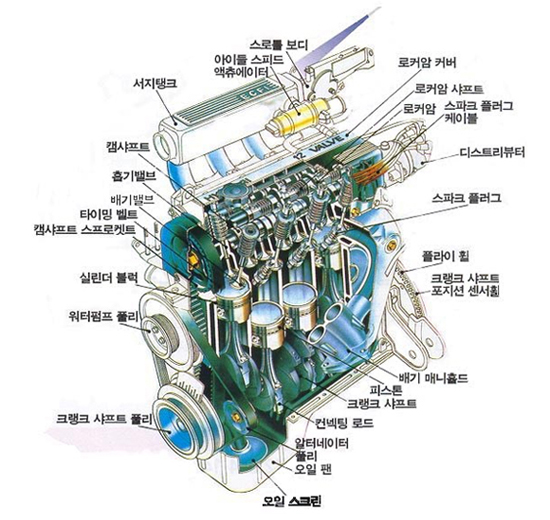

가솔린 기관은 기관 본체, 연료 공급 장치, 윤활 장치, 냉각 장치, 점화 장치, 흡기 및 배기 장치, 배출 가스 제어 장치 등으로 구성되어 있으며, 여기에 시동 및 발전을 위한 시동 전동기와 발전기가 부착되어 있다. 전자제어 연료 분사 기관의 경우에는 위의 장치 이외에 각종 센서와 이를 제어하기 위한 제어 장치가 추가되어 있다.
기관의 본체는 동력을 발생하는 주요 부분으로서 실린더 블록, 크랭크 케이스, 실린더 헤드, 피스톤, 크랭크축, 커넥팅 로드, 플라이휠, 캠축, 밸브 기구, 연소실 등으로 구성되어있다.
기관에 필요한 연료를 공급하는 장치로서 연료 분사 장치 또는 기화기, 연료 탱크, 연료 펌프, 연료 여과기 및 이들 연료 장치의 각 장치와 부품을 연결하는 연료 파이프 등으로 구성되어 있다.
연소실 안에 공급된 연료와 공기 혼합기에 고압의 전기 불꽃을 튀겨서 점화하는 장치로서, 점화 코일, 배전기, 점화 플러그 및 고압 케이블 등으로 구성되어 있다.
기관의 각 운동 부분에 오일을 공급하여 윤활하는 장치로서, 오일 펌프, 오일 여과기 및 오일 팬으로 구성되어 있다.
기관의 작동 온도를 적당한 온도로 유지시키기 위하여 기관을 냉각시키는 장치로서 라디에이터, 냉각수 펌프, 수온 조절기 등으로 구성되어 있다
혼합기 및 공기의 흡입과 배기 가스를 배출시키는 장치로서, 공기 청정기, 흡기 및 배기 매니폴드,촉매 장치, 소음기, 배기 파이프 등으로 구성되어 있다. 제어 장치 기관의 운전 상태를 각종 센서로부터 검출하여 운전 조건의 변화에 따라 최적의 운전 상태를 유지하기 위한 장치로서, 기관의 상태를 감지하는 각종 센서와 이를 종합 분석하는 전자 제어 유닛(ECU : electronic control unit )으로 구성되어 있다.